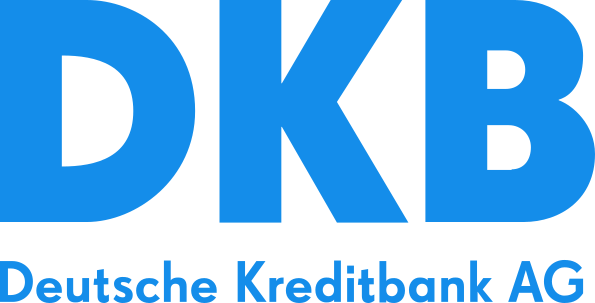
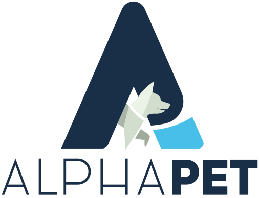

I design and implement AWS infrastructure for banking, fintech, and enterprise applications. My work spans cloud migrations, messaging platforms, infrastructure automation, and platform engineering.
German citizen · Open to relocation to Switzerland or the United States, and international remote roles outside Germany.
Advise client and internal teams on AWS architecture for AI and data transformation projects.
Develop cloud solution designs and implementation plans from business and technical requirements.
Prepare architecture materials and explain service choices to engineers and client stakeholders.

DKB Service
Senior Cloud Engineer
Aug 2024 – Mar 2026
Designed an Amazon MSK platform to replace an external Kafka service, supporting fraud detection, authentication, and internal applications as part of the bank’s migration to AWS.
Defined the recovery approach, authentication methods, and granular producer and consumer access controls across separate internal and customer-facing clusters.
Selected Terraform for the core infrastructure, retaining Crossplane for supporting services. The platform also included AWS Lambda.
Delivered the migration with the platform team, switching workloads topic by topic during scheduled maintenance windows after pilot validation.
Dock Financial
Platform Team Tech Lead
Jun 2023 – Jul 2024
Led AWS platform engineering and developer tooling for development and operations teams.
Built application delivery workflows with EKS, Terraform, Terragrunt, Helm, Karpenter, and GitLab CI.
Redesigned Helm charts and optimized compute and storage through Savings Plans, Reserved Instances, Spot capacity, and selected ARM64 migrations.
Tech-5
Cloud DevOps Architect
Feb 2022 – May 2023
Designed cloud and hybrid infrastructure for client migration and data pipeline projects.
Planned AWS adoption roadmaps and delivered infrastructure automation, containerization, and CI/CD.
Developed a structured learning path for engineers within the consultancy.

AlphaPet
Senior DevOps Engineer
Jun 2020 – Feb 2022
Built AWS infrastructure and delivery automation for ERP and e-commerce workloads.
Introduced Terraform and CI/CD for application infrastructure across EC2, ECS, Docker, and Linux.
Implemented monitoring and alerting with Prometheus, Grafana, Alertmanager, and CloudWatch.
A personal prototype connecting local model inference on Apple Silicon with document ingestion, research, Telegram, and Obsidian. Designed container and data access boundaries using Docker, with MLX/oMLX, Qdrant, and FastAPI.
Education & Languages
MIREA – Russian Technological University
Specialist degree in Computer Security · 2008–2013
Master’s degree equivalent; recognized in Germany.